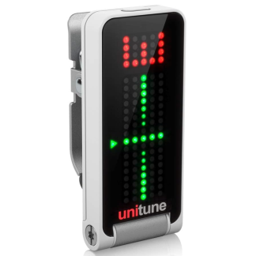
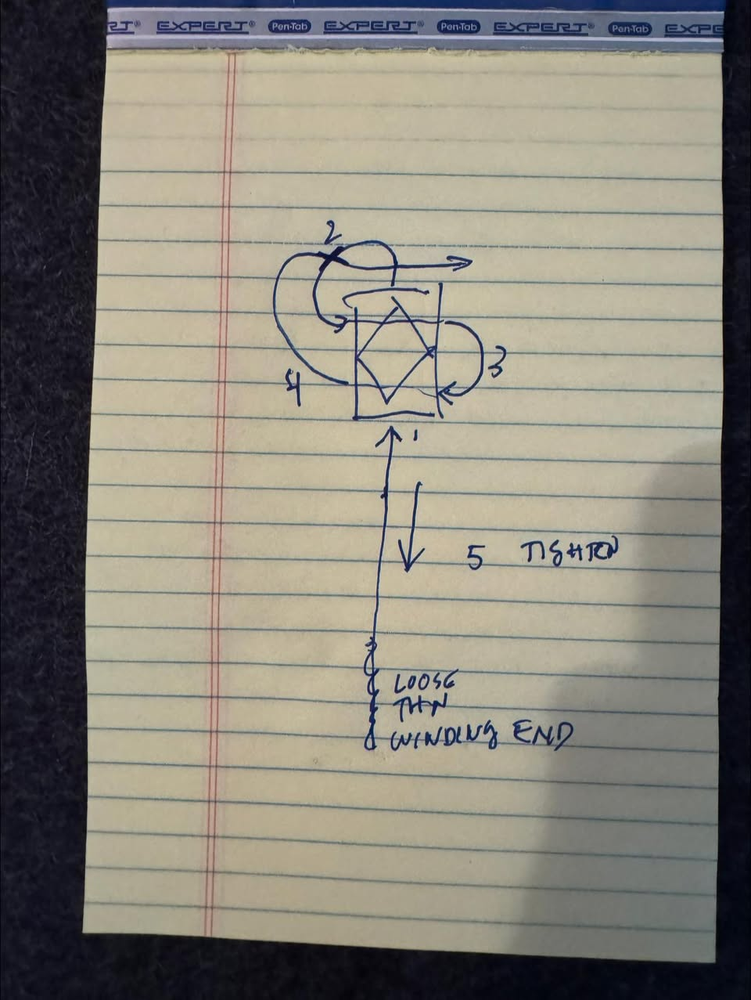
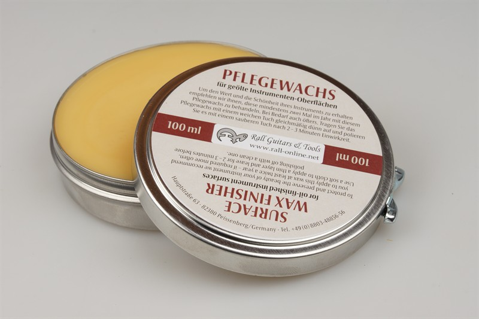

I've tried a few clip on tuners and the TC electronic UNITUNE clip-on has worked the best. It's easy to see when clipped on the headstock. The tracking and accuracy are good and the design of the clip works well on the dragonfly headstock.

Best place (in the USA) to get strings is stringsbymail.com
string set for DF-A12 matched reciprocal tuning
I use these to thread and hold the strings at the bridge. You can use traditional classical guitar knots to do this.I prefer using these as it's easier for me to do and is at least as effective as knots (or... superior in my unscientific experience).
You can get them at Strings by mail
Here's how you thread them:


This beeswax surface finisher is made for use with guitars, etc. It goes a long ways. Given that, the price is reasonable.